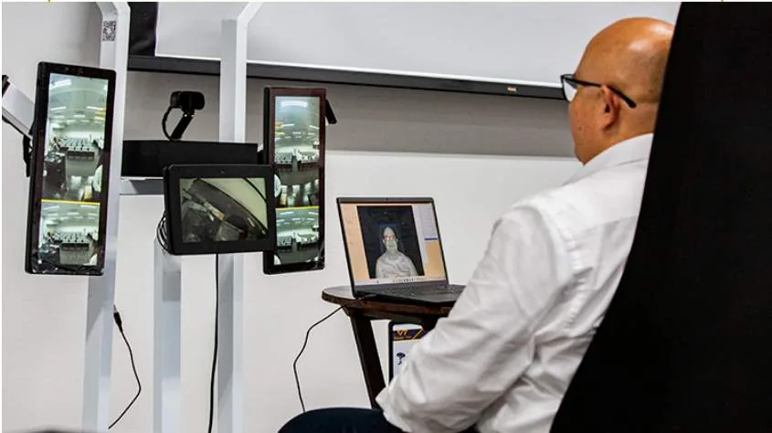
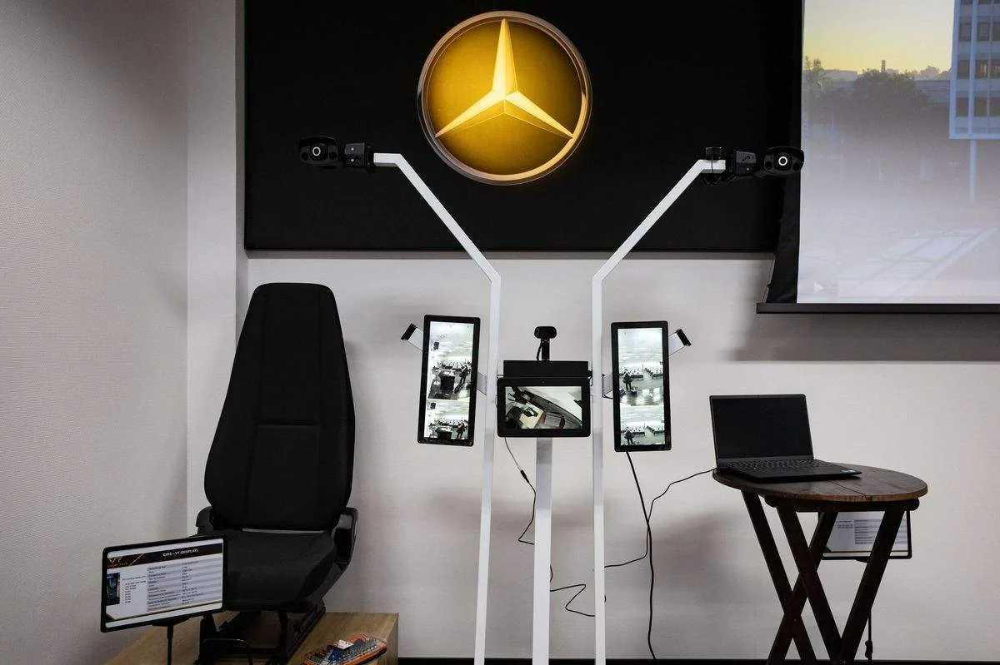

寅家科技首次亮相巴西戴姆勒技术交流日，进一步深化公司在南美市场的布局，充分展现了公司在全球商用车智能化升级赛道中的强劲技术实力。

本次寅家科技集中展出全套成熟、可量产的商用车智能辅助驾驶解决方案。基于智能感知系统VT-Sensing、惯导定位VT-Navi和决策控制VT-Vulcan®等核心技术，带来最新的寅家电子外后视镜（VT-CMS）、寅家驾驶员监测（VT-DMS）、寅家全景泊车（VT-AVM）和寅家前视一体机（VT-FVC ADAS）等技术方案。系列方案有能力满足南美商用车高安全标准，并针对高温、长续航、复杂路况做了本地化硬件与算法优化。涵盖三大板块：一是自研商用车视觉感知、决策与控制核心技术；二是本地化全周期配套服务、整车匹配应用工程经验；三是本土产业链协同、长期技术共创合作模式。我们具备高度灵活的定制化方案能力，可充分适配主机厂需求、区域本地化改造及行业未来法规趋势。

